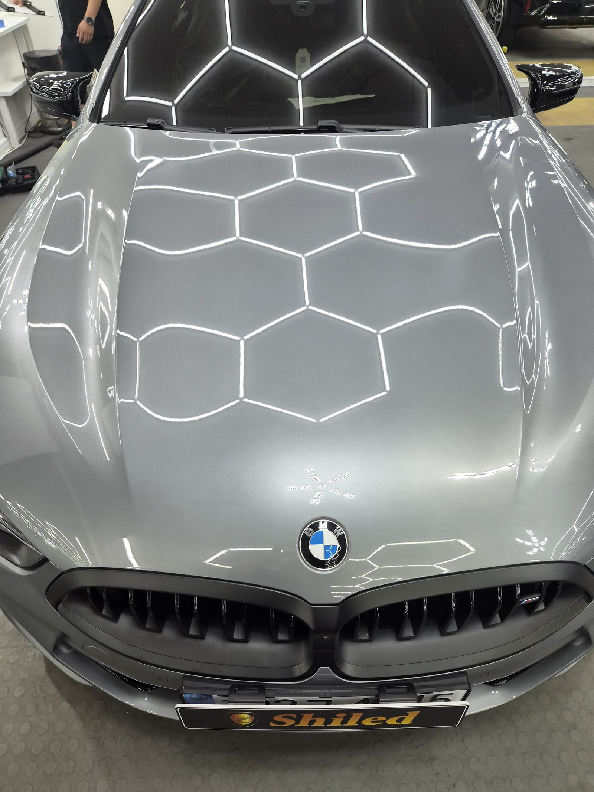
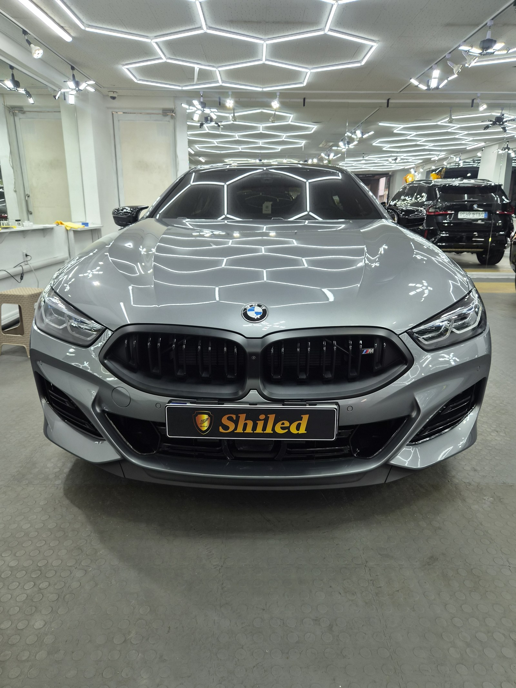
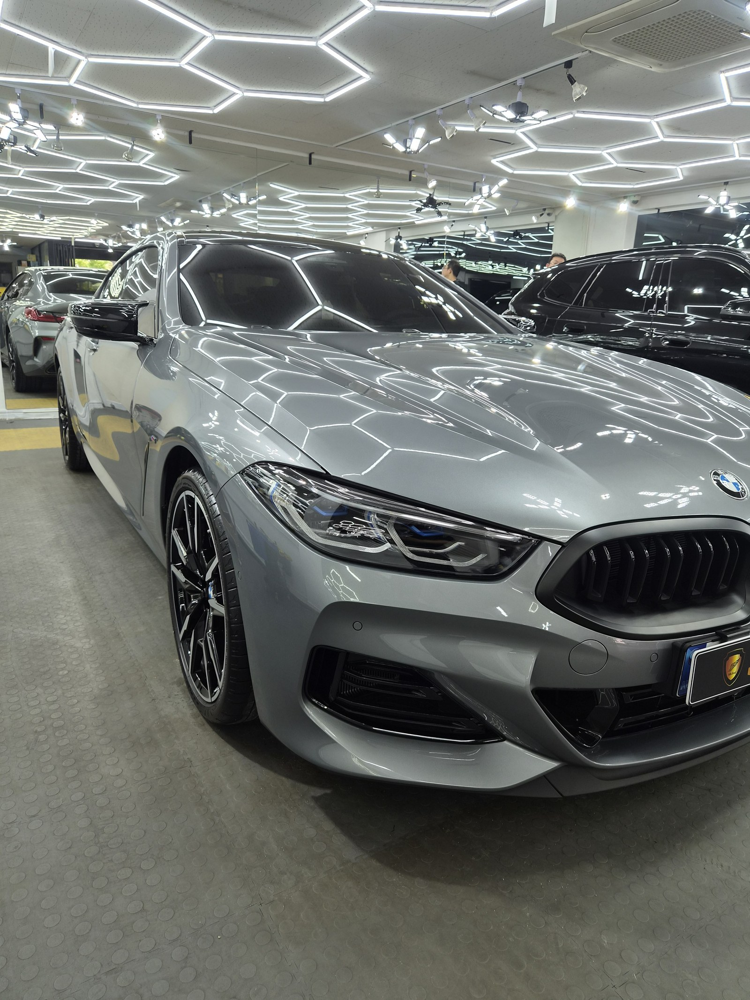
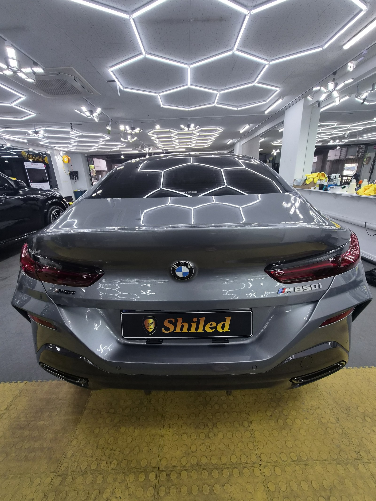
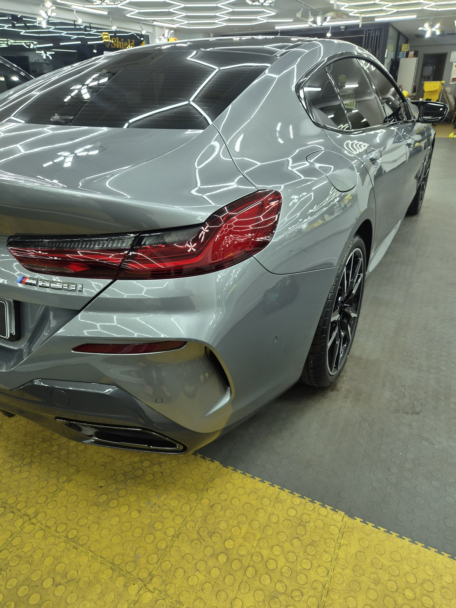
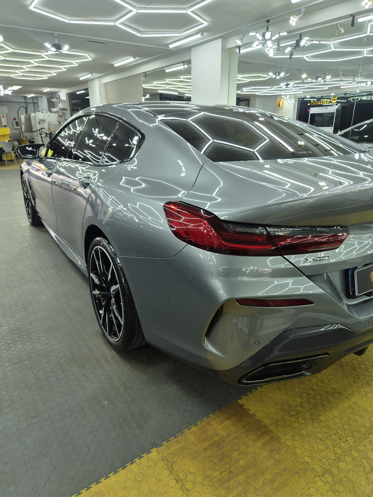
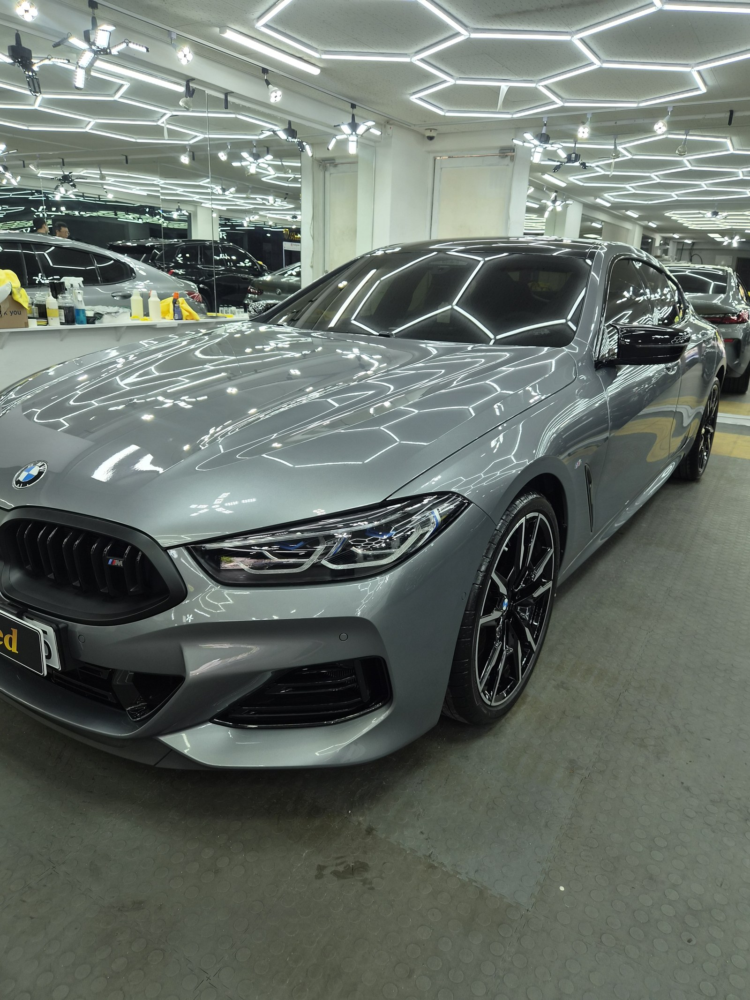
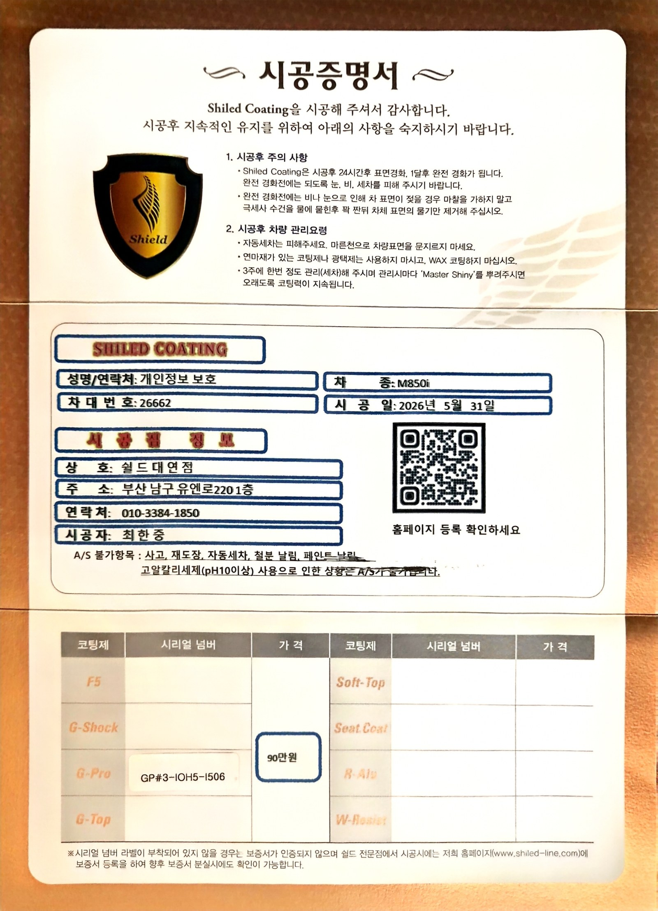

BMW M850i xDrive 그란쿠페 그레이입니다. 아직 출고 전, 새 차입니다.
부산 유리막코팅으로 G-PRO를 올렸습니다.

새 차인데 왜 출고 전에 코팅을 하나
도장면이 가장 깨끗할 때 올리는 코팅이 가장 오래갑니다.
출고 후에는 운행과 세차로 미세한 잔기스와 오염이 쌓이기 시작합니다. M850i 그란쿠페처럼 후드와 루프 라인이 길게 이어진 쿠페형은 그 라인 위로 조명이 그대로 흐르기 때문에, 잔기스 하나만 있어도 눈에 잘 띕니다. 그래서 출고 전 코팅이 더 중요합니다.


그란쿠페에 왜 G-PRO인가
G-PRO는 경도를 끌어올려 스크래치 내성을 강화하는 하드코팅입니다.
저상형 쿠페는 세차 접근이 까다로워 스월과 잔기스가 생기기 쉬운 차종입니다. G-PRO를 올리면 표면 경도가 높아져 세차 마찰에서 오는 잔기스 발생을 줄여주고, 후드 위로 흐르는 라인이 스크래치 없이 오래 유지됩니다. 코팅제는 대표가 화학공학 전공으로 직접 개발·제조한 제품입니다.
기술자의 팁
신차라고 바로 코팅을 올리지 않습니다. 운송·전시 과정에서 묻은 미세 오염을 디테일링 세차와 탈지로 걷어낸 뒤에 올립니다. 깨끗한 바탕 위에 올려야 코팅이 제대로 밀착합니다.


테일램프 라인까지 또렷하게
후면부는 코팅막이 제대로 올라갔는지 가장 잘 드러나는 자리입니다.
테일램프와 트렁크 리드 사이 굴곡에서 조명이 갈라지지 않고 매끈하게 이어져야 정상입니다. 범퍼 하단까지 코팅을 꼼꼼히 올려, 하부까지 방오성을 확보했습니다.


시공증명서를 함께 드립니다
모든 시공 차량에 시공증명서를 드립니다.
차종·시공일·코팅제 시리얼 번호가 적혀 있고, 홈페이지에 등록해 보증을 받으실 수 있습니다. 이 차는 G-PRO 코팅으로 기록돼 있습니다.

차종·시공일·코팅제 시리얼이 기재된 시공증명서
자주 묻는 질문
Q. 유리막코팅, BMW M850i도 출고 전 시공이 필요한가요?
A. 필요합니다. 도장면이 가장 깨끗한 시점은 출고 직후입니다. 쿠페형 그란쿠페는 후드와 루프 라인이 길게 이어져 있어 스크래치가 눈에 더 잘 띄는데, 운행 전 코팅을 올려두면 이 라인을 오래 지킬 수 있습니다.
Q. M850i에는 왜 G-PRO를 올렸나요?
A. G-PRO는 경도를 끌어올려 스크래치 내성을 강화하는 하드코팅입니다. 그란쿠페처럼 저상형 쿠페는 세차 시 스월과 잔기스가 생기기 쉬운데, G-PRO를 올리면 표면 경도가 높아져 세차 마찰에서 오는 잔기스 발생을 줄여줍니다.
Q. 싱글·듀얼·트리플코팅은 어떻게 선택하나요?
A. 스크래치 내성이 우선이면 G-PRO, 발수·방오가 우선이면 G-TOP, 색감이 우선이면 F5입니다. 두 가지 이상을 동시에 챙기고 싶으면 듀얼(G-PRO+G-TOP)이나 트리플(G-PRO+F5+G-TOP)로 조합합니다.
Q. 신차코팅도 전처리를 하나요?
A. 합니다. 신차라도 운송과 전시 과정에서 미세 오염이 묻습니다. 디테일링 세차와 탈지로 표면을 정리한 뒤 코팅을 올려야 코팅막이 도장면에 제대로 밀착합니다.
Q. 쉴드광택 위치와 예약은 어떻게 하나요?
A. 부산 남구 유엔로220 1F 쉴드광택입니다. 예약·상담은 010-3384-1850, 대표 최한중이 직접 상담하고 책임 시공합니다.
새 차일수록 시작점이 다릅니다. 가장 깨끗할 때 입혀두십시오.
제품을 직접 만드는 사람이 직접 시공합니다.
부산에서 수입차 신차코팅을 고민 중이시면 편하게 연락 주십시오.
어떤 차를 타냐보다 어떻게 타냐가 중요합니다~!
시공 중에는 전화를 받지 못할 때가 많습니다.
카카오톡으로 차종과 원하시는 시공을 남겨주시면 확인 후 답변드립니다.
쉴드광택 · 부산 남구 유엔로220 1F · 대표 최한중